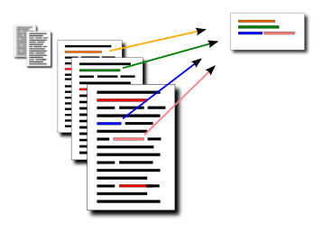

Publications
This is a selection of my publications. Please also see my page on Google Scholar
Assisting Discussion Forum Users using Deep Recurrent Neural Networks

We present a discussion forum assistant based on deep recurrent neural networks (RNNs).
The assistant is trained to perform three different tasks when faced with a question from a user.
Firstly, to recommend related posts.
Secondly, to recommend other users that might be able to help.
Thirdly, it recommends other channels in the forum where people may discuss related topics.
Our recurrent forum assistant is evaluated experimentally by prediction accuracy for the end--to--end trainable parts, as well as by performing an end-user study.
We conclude that the model generalizes well, and is helpful for the users.
To appear in: Representation Learning for NLP, RepL4NLP, 2016
Jacob Hagstedt P Suorra, Olof Mogren
Extractive Summarization by Aggregating Multiple Similarities
Many existing methods for extracting summaries rely on comparing the similarity of two sentences in some way. In this paper, we present new ways of measuring this similarity, based on sentiment analysis and continuous vector space representations, and show that combining these together with similarity measures from existing methods, helps to create better summaries. The finding is demonstrated with MULTSUM, a novel summarization method that uses ideas from kernel methods to combine sentence similarity measures. Submodular optimization is then used to produce summaries that take several different similarity measures into account. Our method improves over the state-of-the-art on standard benchmark datasets; it is also fast and scale to large document collections, and the results are statistically significant.
RANLP 2015, Hissar, Bulgaria, September 6th-11th
Olof Mogren, Mikael Kågebäck, Devdatt Dubhashi
More info, PDF fulltext, bibtex.
Extractive Summarization using Continuous Vector Space Models
A workshop paper showing preliminary results on multi-document summarization with continuous vector space models for sentence representation. The experiments were performed on opinionated online user reviews.
2nd Workshop on Continuous Vector Space Models and their Compositionality CVSC 2014, Gothenburg Sweden
Mikael Kågebäck, Olof Mogren, Nina Tahmasebi, Devdatt Dubhashi
More info, PDF fulltext, bibtex.
Adaptive dynamics of realistic small-world networks
Continuing in the steps of Jon Kleinberg's and others celebrated work on decentralized search in small-world networks, we conduct an experimental analysis of a dynamic algorithm that produces small-world networks. We find that the algorithm adapts robustly to a wide variety of situations in realistic geographic networks with synthetic test data and with real world data, even when vertices are uneven and non-homogeneously distributed.
European Conference on Complex Systems 2009
Olof Mogren, Oskar Sandberg, Vilhelm Verendel, Devdatt Dubhashi
More info, PDF fulltext, bibtex.

Visions and open challenges for a knowledge-based culturomics
A white paper outlining some ideas and challenges within the field of culturomics.
International Journal on Digital Libraries, February 2015
Nina Tahmasebi, Lars Borin, Gabriele Capannini, Devdatt Dubhashi, Peter Exner, Markus Forsberg, Gerhard Gossen, Fredrik D. Johansson, Richard Johansson, Mikael Kågebäck, Olof Mogren, Pierre Nugues, Thomas Risse
More info, PDF fulltext, bibtex.
Editing Simple Graphs

Inspired by the word-co-occurrence graph from Wikipedia documents, this paper presents an FPT approach to cluster the words.
Journal of Graph Algorithms and Applications 18 (2014), 557-576
Peter Damaschke, Olof Mogren
More info, PDF fulltext.
Summarizing Online User Reviews Using Bicliques
This paper presents an approach to summarize online user-reviews based on finding bicliques in the bipartite word-document graph.
Proceedings of SOFSEM 2016, LNCS 9587, pp 569-579.
Authors: Azam Sheikh Muhammad, Peter Damaschke, Olof Mogren
Fulltext: PDF.